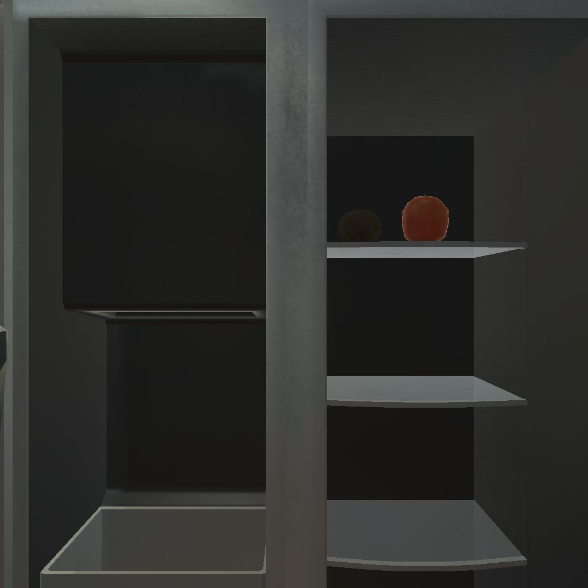

---------------------------------------------------------task: 12---------------------------------------------------------
--------------------------------------------------------------------------------------------------------------------------------------------------------------------
--------------------------------------------------------------------------------------------------------------------------------------------------------------------
Step:--------------------------------------------------------------------------14-------------------------------------------------------------------------------
----------------------------------------
VLM Prompt:
Image1:
Image2:
Image3:
**Instruction**
1. Analyze the provided images to identify all visible household objects and compare the difference between images (e.h. whether the object is opened or not and taken on hand or not), focusing on those relevant to the task description "clean some tomato and put it in countertop."
2. Use the analysis of images and the task hint "The agent must find an object of the desired type, pick it up, go to a sink or a basin, clean the object with a sink or basin, and then find the correct location to place it and put it down there. The agent does not need to use soap bottle or faucet to clean the object, and the agent just needs to do action that is "clean the object with the sink or sink basin"." to answer the question: what is the most reasonable action in the choices for the task description "clean some tomato and put it in countertop"?
3. Decide and write the answer using the template: The answer is: (i): , where i is the real number. If there is no desired object in images, search every place based on **Initial Observation** to find the object. And if no one is exactly correct, choose a similar answer.
**Initial Observation**
You are in the middle of a room. Looking quickly around you, you can see cabinet (1-6), microwave (1), countertop (1-2), coffeemachine (1), toaster (1), sink (1), sinkbasin (1), fridge (1)
**Answer Choices**
(1): go to cabinet 2
(2): go to cabinet 3
(3): go to microwave 1
(4): go to cabinet 4
(5): go to cabinet 5
(6): go to cabinet 6
(7): go to countertop 1
(8): go to coffeemachine 1
(9): go to toaster 1
(10): go to countertop 2
(11): go to sink 1
(12): go to sinkbasin 1
(13): open cabinet 1
(14): close cabinet 1
(15): examine cabinet 1
**Answer**
Let's think step by step by following the instructions.
----------------------------------------
----------------------------------------
Original Response:
First, we analyze the images:
- Image 1 shows a sink with a faucet, and a window above it. There is no tomato visible in this image.
- Image 2 shows a dark room with shelves, on one of the shelves there are two fruits, one of which appears to be a tomato.
- Image 3 shows a closed cabinet, but we cannot see inside it.
Based on the task description "clean some tomato and put it in countertop," we need to find a tomato, clean it, and then place it on the countertop.
From the **Initial Observation**, we know there is a sink, sinkbasin, and multiple cabinets, among other things.
From the images provided, we can see that there is a tomato in Image 2 on one of the shelves.
Based on the task hint, we do not need to use soap or faucet, just need to "clean the object with the sink or sink basin."
Considering the above information, the most reasonable action from the choices given would be to first go to where the tomato is, so we should:
(1): go to cabinet 2 - As this is where we see the tomato.
After getting the tomato, the agent would then go to the sink or sinkbasin to clean the tomato and then go to the countertop to place it there. However, these actions are not listed in the choices, so the first action to take based on the provided images and information is:
The answer is: (1): go to cabinet 2
----------------------------------------
----------------------------------------
>>> Refine Original VLM Response and Get Pure Action: go to cabinet 2
----------------------------------------
-----------------------------------------------------------------
Running time: 14.301666975021362 seconds
Total Money: 6.733030000000007
-----------------------------------------------------------------
-----------------------------------------------------------------
Text Observation:You arrive at loc 1. The cabinet 2 is open. On the cabinet 2, you see a bowl 1.
-----------------------------------------------------------------
UNSUCCEED